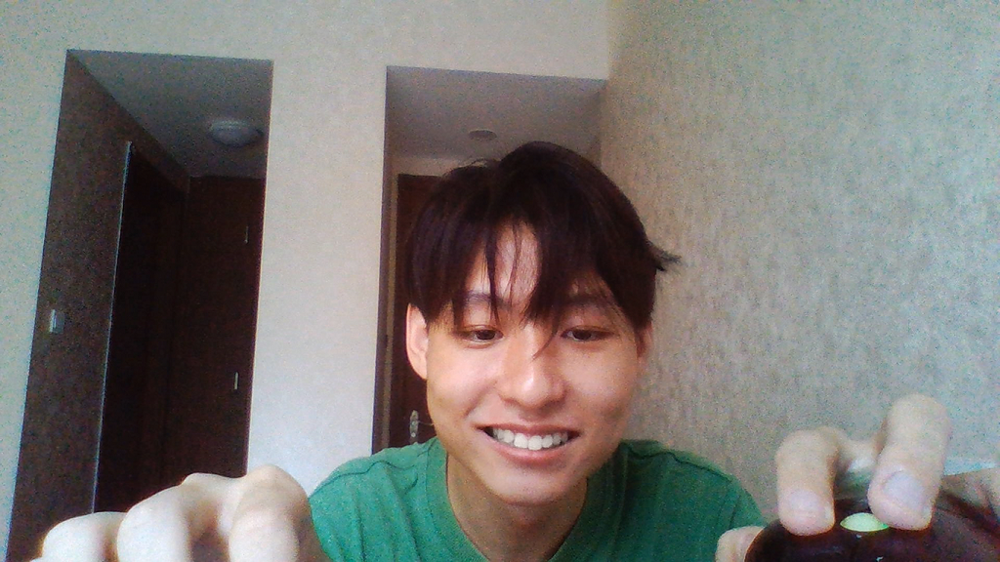

Figure 1. Lvmin Zhang's reading a Twitter meme after he woke up at 7:30 a.m..
As shown in Fig. 1, Lvmin Zhang is a bachelor graduated from Soochow University in 2021. He is the author of a software called Style2Paints and the founder of a non-commercial research group called Style2Paints Research. You may interested in:- Lvmin's researches and publications in the website of Style2Paints Research.
- Lvmin's projects in his GitHub profile.
- Lvmin's resume.